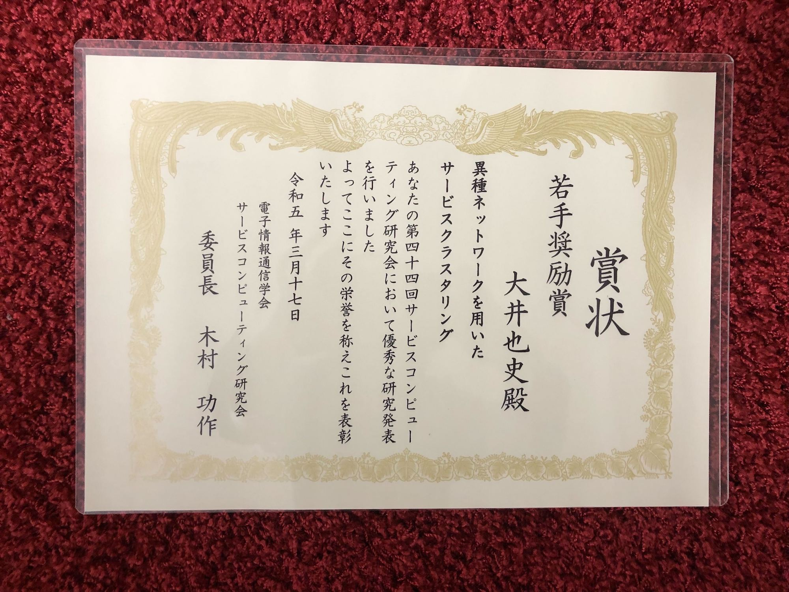
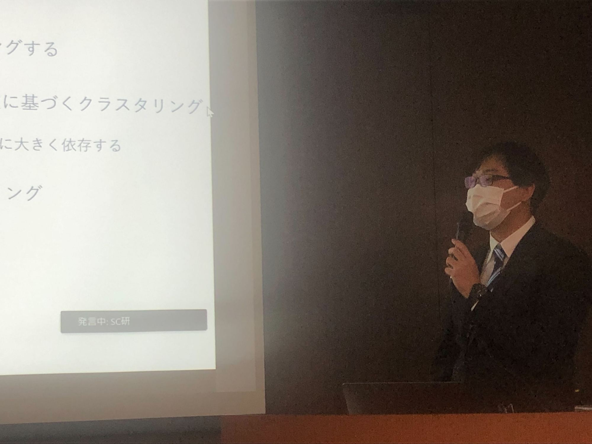

Laboratory Life
日時: 2023年3月17日(金) 場所: 国立情報学研究所



概要
大井さんが，サービスコンピューティング研究会で研究発表を行い，若手奨励賞を受賞しました！
<発表内容>
発表者: 大井也史
タイトル: 「異種ネットワークを用いたサービスクラスタリング」
概要:
サービスの連携関係を表すネットワークと利用者によるサービスの利用関係を表すネットワークの
2種類の異なるネットワークを構築し，グラフ埋め込みを用いてサービス埋め込みを実現する．提案手法の妥当性を検証するために，
提案手法をWebサービスの実データに適用し，クラスタリング実験を行った．その結果，既存の手法よりも6.6%の精度向上を達成した．